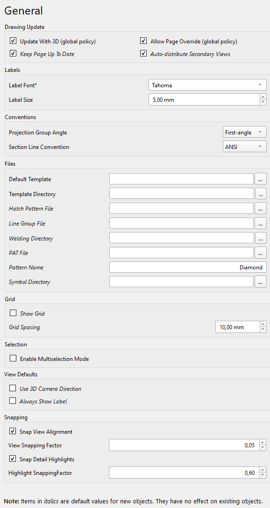
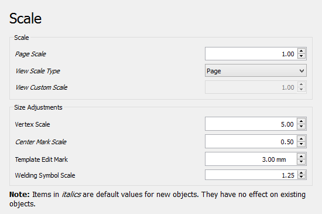
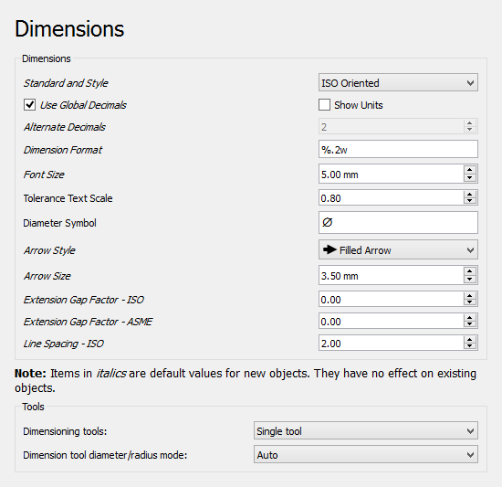
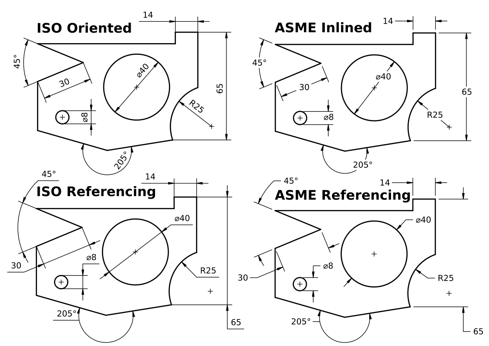
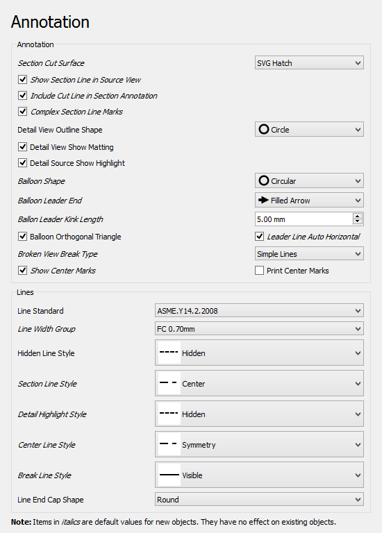
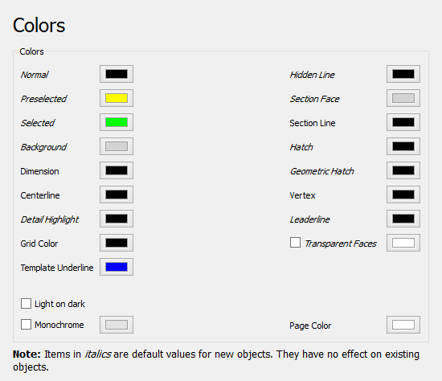
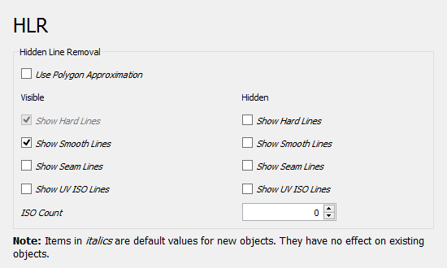
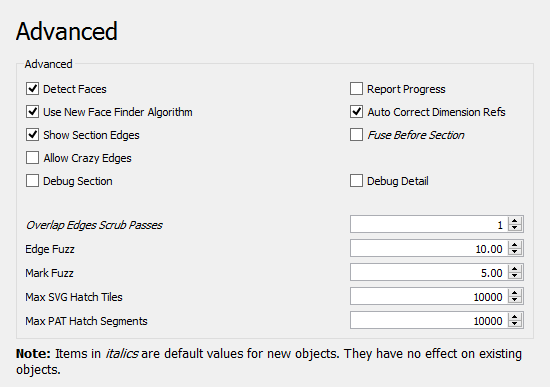

TechDraw Preferences/bg
Въведение
Прeдпочитанията за Работна маса TechDraw могат да бъдат намерени в Редактор на предпочитания. В менюто изберете Редактиране → Предпочитания и след това Технически чертеж. Тази група е достъпна само ако работната маса на TechDraw е била заредена в текущата сесия на FreeCAD.

Има седем страници: Общи, Мащаб, Размери, Надписи, Цветове, HLR and Advanced.
Всички предпочитания с етикети в стил italic са стойности по подразбиране за нови обекти за чертане. Те нямат ефект върху съществуващите обекти.
Общи


Page Update
- Update with 3D (global policy): Дали страниците се актуализират всеки път, когато 3D моделът се променя.
- Allow page override (global policy): Whether or not a page's Keep Updated property can override the global Update with 3D parameter.
- Keep page up to date: Keeps drawing pages in sync with changes of the 3D model in real time. This can slow down the response time.
- Auto-distribute secondary views: Automatically distributes secondary views for projection groups.
Labels
- Label font: The name of the font for labels. The font is also used for new dimensions, changing it has no effect on existing dimensions.
- Label size: Default size for labels.
Conventions
- Projection group angle: If projection groups will use either first-angle (European) projection or third-angle (American) projection. See multiview projection for an explanation.
- Section line convention: Standard for section lines that controls the position of arrows and symbol (introduced in 1.0). The options are:
- ANSI
- ISO
Files
- Default template: Default template file for new pages.
- Template directory: Starting directory for toolbar button New Page From Template.
- Hatch pattern file: Default SVG or bitmap file for hatches.
- Line group file: Alternate file for personal line group definitions.
- Welding directory: Default directory for toolbar button Weld Symbol.
- PAT file: Default PAT pattern definition file for geometric hatches.
- Pattern name: Name of the default PAT pattern.
- Symbol directory: Alternate directory to search for SVG symbol files.


Grid
- Show grid: Default Show Grid setting for new pages.
- Grid spacing: Default distance between grid lines for new pages.
Selection
- Enable multi-selection mode: If enabled, clicking without Ctrl does not clear the existing selection. introduced in 1.0
View Defaults
- View frames mode: Controls when the view boundary frames and labels are displayed. introduced in 1.1
- Auto: Show on hover.
- On: Always show.
- Off: Only show when the object is selected.
- Manual: Behaves the same as the Off option.
- Use 3D camera direction: If checked, the 3D camera direction (or normal of a selected face) will be used as the view direction. If not checked, Views will be created as Front Views. introduced in 1.0
Прихващане
- Snap view alignment: If checked, Views will be snapped into alignment when dragged. introduced in 1.0
- View snapping factor: Tolerance for snapping of Views - if a View is within this fraction of View size of perfect alignment, it will snap into alignment. introduced in 1.0
- Snap detail highlights: If checked, detail view highlights will be snapped to the nearest vertex when dragging in TaskDetail. introduced in 1.1
- Highlight snapping factor: Snap radius for highlights. Vertex must be within this factor times the highlight size to be a snap target. introduced in 1.1
Scale


Scale
- Page scale: Default scale for new pages.
- View scale type: Default scale for new views.
- View custom scale: Default scale for views if View scale type is Custom.
- Legacy symbol scaling: Uses the original (incorrect) scaling method for SVG symbols, Spreadsheet views and Draft views as used in v1.0 and earlier. Otherwise, a more accurate method will be used.
Size Adjustments
- Vertex scale: Scale of vertex dots. Multiplier of line width.
- Center mark scale: Size of center marks. Multiplier of vertex size.
- Template edit mark: Size of template field click handles in mm (green dots).
- Welding symbol scale: Multiplier for size of welding symbols.
Screen Mode
- Screen mode: Draws vertices and edges at a constant size on screen instead of scaling them with the page. Can also be toggled from the page context menu.
- Vertex size: Size of vertex dots on screen. Only used in screen mode.
- Edge width: Width of edges on screen. Only used in screen mode.
Dimensions


Dimensions
- Standard and style: The standard to be used for dimensional values. The differences between the standards are shown in the image:

Differences between the supported standards. (Image source)

ISO oriented- drawn according to the standard ISO 129-1, text is rotated to be parallel with the dimension line tangent.ISO referencing- drawn in compliance with ISO 129-1, text is always horizontal, above the shortest possible reference line.ASME inlined- drawn according to the standard ASME Y14.5M, text is horizontal, inserted in a break within the dimension line or arc.ASME referencing- drawn in compliance with ASME Y14.5M, text is horizontal, short reference line is attached to one side's vertical center.
- Use global decimals: Use number of decimals from the general preferences.
- Show units: Appends the unit (mm, in, etc.) to dimension values.
- Alternate decimals: Number of decimals if Use Global Decimals is not selected and Dimension Format not specified.
- Dimension format: Custom format for dimension text. Uses the printf format specifier.
- Font size: Font size for dimension text.
- Tolerance text scale: Tolerance font size adjustment. Multiplier of dimension Font Size.
- Diameter symbol: Character used to indicate diameter dimensions.
- Arrow style: Arrowhead style for dimensions.
- Arrow size: Arrowhead size of dimensions.
- Extension gap factor - ISO: Gap between dimension point and start of extension lines for ISO dimensions. introduced in 0.21
- Extension gap factor - ASME: Gap between dimension point and start of extension lines for ASME dimensions. introduced in 0.21
- Line spacing - ISO: Spacing between the dimension line and dimension text for ISO dimensions. introduced in 0.21
Tools
- Dimensioning tools: Select the type of dimensioning tools for the toolbar. Whichever you choose, all tools are always available in the menu and through shortcuts. The options are: introduced in 1.0
- Single tool: A single tool for all dimensioning in the toolbar: Distance, Distance X / Y, Angle, Radius. Others in dropdown.
- Separated tools: Individual tools for each dimensioning tool.
- Both: You will have both the 'Single tool' and the separated tools.
- Dimension tool diameter/radius mode: While using the Dimension tool you may choose how to handle circles and arcs: introduced in 1.0
- Auto: The tool will apply radius to arcs and diameter to circles.
- Diameter: The tool will apply diameter to all.
- Radius: The tool will apply radius to all.
Snapping
- Snap dimensions: If this is checked, new dimensions will be set to snap to position. If not checked, new dimensions will not snap. Snapping for individual dimensions may be adjusted with the Allow Snapping property.
- Dimension text factor: Fraction of the dimension text length within which the text snaps to its centered position.
- Chain factor: Fraction of the spacing between dimensions within which they snap as chain or ordinate dimensions.
Annotation


Annotation
- Section cut surface: Style for section cut surface. The options are:
- Hide: There is no visible surface.
- Solid color: The surface gets the color set for Section Face
- SVG hatch: The surface is hatched.
- PAT hatch: The surface is geometrically hatched.
- Show section line in source view: If checked, the section annotation will be drawn on the Source view. If unchecked, no section line, arrows or symbol will be shown in the Source view. introduced in 1.0
- Include cut line in section annotation: If checked, the cut line will be drawn on the Source view. If unchecked, only the change marks, arrows and symbols will be displayed. introduced in 1.0
- Complex section line marks: Show marks at direction changes on ComplexSection lines. introduced in 0.21
- Detail view outline shape: Outline shape for detail views. The options are:
- Circle
- Square
- Detail view show matting: This checkbox controls whether or not to display the outline around a detail view. introduced in 1.0
- Detail source show highlight: This checkbox controls whether or not to display a highlight around the detail area in the detail's source view. introduced in 1.0
- Balloon shape: Shape of balloon annotations.
- Balloon leader end: Default style for balloon leader line ends, see balloon properties.
- Balloon leader kink length: Length of balloon leader line kink.
- Balloon orthogonal triangle: If Balloon Leader end is Filled triangle, the triangle can only get a vertical or horizontal direction when the balloon is moved.
- Leader line auto horizontal: Forces last leader line segment to be horizontal.
- Broken view break type: Default break type used to indicate BrokenViews: introduced in 1.0
- No break lines
- Zigzag lines
- Simple lines
- Show center marks: Show arc center marks in views.
- Print center marks: Show arc centers in printed output.
- Enforce ISO 8601 date format: Fills out template date fields using ccyy-mm-dd format automatically, even if that is not the standard format for the current locale.
Lines
- Line standard: Standard to be used to draw section lines in section views.
- Line width group: A LineGroup to set the default line widths.
- Hidden line style: Style of hidden lines. introduced in 1.0
- Section line style: Style for section lines.
- Detail highlight style: Line style of the outline shape for detail views.
- Center line style: Default style for centerlines.
- Break line style: Default style for lines used to indicate BrokenViews. introduced in 1.0
- Line end cap shape: The default (round) should almost always be the right choice. Flat or square caps are useful if you are planning to use a drawing as a 1:1 cutting guide.
Colors


Setup of the default colors for new pages:
- Normal: Normal line color.
- Preselected: Preselection color. The color that is used to highlight objects when hovering with the mouse over them.
- Selected: Color for selected objects.
- Background: Background color around pages.
- Dimension: Color of dimension lines and text.
- Centerline: Color for centerlines.
- Detail highlight: Line color for the outline shape of detail views.
- Grid color: Color for all page grids.
- Template underline: Color for the underline that marks editable texts in templates. introduced in 1.0
- Hidden line: Hidden line color. This color will be used for all kinds of hidden lines.
- Section face: Color of the section view cut surface. Only used if the setting Section cut surface is set to Solid Color.
- Section line: Color of the section view cut line.
- Hatch: Hatch image color.
- Geometric hatch: Geometric hatch pattern color.
- Vertex: Color of the selectable vertices in views.
- Leader line: Color for new leader lines.
- Break line: Color for new break lines in broken views. introduced in 26.3
- Face color: Color for non-transparent faces. introduced in 26.3
- Transparent faces: If checked, object faces will be transparent. Otherwise the set color will be used for faces.
- Light on dark: If checked text and lines will have a light color. To be used if the Page color is dark. Transparent or light colored faces are recommended with this option.
- Monochrome: If checked, the set color will be used for all text and lines.
- Page color: The background color of the page.
HLR


HLR stands for hidden line removal.
- Use polygon approximation: Uses an approximation to find hidden lines. This is fast, but the result is a collection of short straight lines.
- Show hard lines: Shows hard and outline edges (visible lines always shown)
- Show smooth lines: Shows smooth lines. A smooth line is a line indicating a change between tangent surfaces, as in the transition from a flat surface to a fillet.
- Show seam lines: Show seam lines. A seam line is a boundary between faces.
- Show UV ISO lines: Shows ISO lines. ISO stands for isoparametric. Here is a description what isoparametric lines (in fact curves) are.
- ISO count: The number of ISO lines per face edge.
Advanced


- Detect faces: If checked, TechDraw will attempt to build faces using the line segments returned by the hidden line removal algorithm. Faces must be detected in order to use hatching, but there can be a performance penalty in complex models.
- Report progress: Issue progress messages while building View geometry.
- Identify faces representing voids: If checked, and the face finder algorithm supports it, FreeCAD will attempt to decide whether each drawing face represents either the material, or a hole. For large amounts of faces the detection can become slow. introduced in 26.3
- Auto-correct dimension references: If checked, an attempt is made to update dimension references when the model changes.
- Show section edges: Highlights the border of the section cut in section views.
- Fuse before section: Performs a fuse operation on the input shape(s) before Section view processing.
- Switch workbench on click: If checked, double-clicking on a page in the tree will automatically switch to TechDraw and the page will be made visible. introduced in 1.1
- Allow crazy edges: Includes edges with unexpected geometry in results, e.g. zero lengths.
- Validate shapes: If checked, input shapes will be checked for errors before use and invalid shapes will be skipped. It can be slower but may prevent crashes. introduced in 1.1
- Debug section: Dumps intermediate results during a Section view processing.
- Debug bad shape: If checked, shapes that failed validation will be saved as B-rep files for later analysis. introduced in 1.1
- Debug detail: Dumps intermediate results during a Detail view processing.
- Face finder algorithm: Use the newest or one of the legacy face finder algorithms. the options are: introduced in 26.3
- FreeCAD v0.17
- FreeCAD v0.21
- FreeCAD v26.3 (default)
- Overlap edges scrub passes: The number of attempts to remove overlapping edges returned by the Hidden Line Removal algorithm. A value of 0 indicates no scrubbing. Values above 2 are generally not productive. Each attempt adds to the time required to produce the drawing.
- Edge fuzz: Size of selection area around edges. The fuzz unit is approximately 0.1 mm, depending on your current zoom. The default is 10. Values in the 20-30 range will make it noticeably easier to select edges. Large numbers will cause overlaps with other drawing elements.
- Mark Fuzz: Selection area around center marks. The fuzz unit is approximately 0.1 mm, depending on your current zoom.
- Max SVG hatch tiles: The limit of SVG tiles with a size of 64x64 pixels used to hatch a single face. For large scalings one might get an error about to many SVG tiles, then one needs to increase the tile limit.
- Maximum PAT hatch segments: The maximum hatch line segments used when hatching a face with a PAT pattern.
- Balloon drag: Modifier key for balloon drag can be changed from the default here to avoid conflicts with OS or navigation style key bindings. introduced in 1.0
TechDraw
- Page: New Page, New Page From Template, Update Template Fields, Redraw Page, Print All Pages, Export Page as SVG, Export Page as DXF
- TechDraw Views: New View, Broken View, Section View, Complex Section View, Detail View, Projection Group, Clip Group, Insert SVG, Bitmap Image, Share View, Project Shape
- Views From Other Workbenches: Active View, Draft View, BIM View, Spreadsheet View
- Dimensions: Dimension, Length Dimension, Horizontal Length Dimension, Vertical Length Dimension, Radius Dimension, Diameter Dimension, Angle Dimension, Angle Dimension From 3 Points, Area Annotation, Horizontal Extent Dimension, Vertical Extent Dimension, Repair Dimension References
- Hatching: Image Hatch, Geometric Hatch
- Symbols: Weld Symbol, Surface Finish Symbol, Hole/Shaft Fit
- Stacking: Stack Top, Stack Bottom, Stack Up, Stack Down
- Attributes/Modifications: Select Line Attributes, Cascade Spacing and Delta Distance, Change Line Attributes, Extend Line, Shorten Line, Toggle View Lock, Position Section View, Align Horizontal Chain Dimensions, Align Vertical Chain Dimensions, Align Oblique Chain Dimensions, Cascade Horizontal Dimensions, Cascade Vertical Dimensions, Cascade Oblique Dimensions, Area Annotation, Arc Length Annotation, Customize Format Label
- Centerlines/Threading: Circle Centerlines, Bolt Circle Centerlines, Cosmetic Thread Hole Side View, Cosmetic Thread Hole Bottom View, Cosmetic Thread Bolt Side View, Cosmetic Thread Bolt Bottom View, Cosmetic Intersection Vertices, Offset Vertex, Cosmetic 1 Point Circle, Cosmetic 2 Point Circle, Cosmetic 3 Point Circle, Cosmetic Arc, Cosmetic Parallel Line, Cosmetic Perpendicular Line
- Format/Organize Dimensions Horizontal Chain Dimension, Vertical Chain Dimension, Oblique Chain Dimension, Horizontal Coordinate Dimension, Vertical Coordinate Dimension, Oblique Coordinate Dimension, Horizontal Chamfer Dimension, Vertical Chamfer Dimension, Arc Length Dimension, Insert '⌀' Prefix, Insert '□' Prefix, Insert 'n×' Prefix, Remove Prefix, Increase Decimal Places, Decrease Decimal Places
- Annotations: Text Annotation, Rich Text Annotation, Balloon Annotation, Axonometric Length Dimension
- Add Lines: Leader Line, Centerline on Face, Centerline Between 2 Lines, Centerline Between 2 Points, Cosmetic Line Through 2 points, Edit Line Appearance, Toggle Edge Visibility
- Add Vertices: Cosmetic Vertex, Midpoint Vertices, Quadrant Vertices
- Miscellaneous: Remove Cosmetic Object
- Additional: Line Groups, Templates, Hatching, Geometric dimensioning and tolerancing, Preferences
- Getting started
- Installation: Download, Windows, Linux, Mac, Additional components, Docker, AppImage, Ubuntu Snap
- Basics: About FreeCAD, Interface, Mouse navigation, Selection methods, Object name, Preferences, Workbenches, Document structure, Properties, Help FreeCAD, Donate
- Help: Tutorials, Video tutorials
- Workbenches: Std Base, Assembly, BIM, CAM, Draft, FEM, Inspection, Material, Mesh, OpenSCAD, Part, PartDesign, Points, Reverse Engineering, Robot, Sketcher, Spreadsheet, Surface, TechDraw, Test Framework
- Hubs: User hub, Power users hub, Developer hub